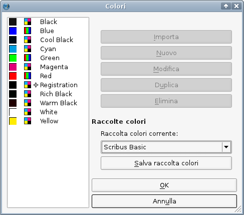
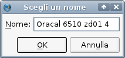

La raccolta colori predefinita può essere cambiata solo quando nessun documento di Scribus è aperto. Per cambiarla, aprite la finestra di gestione colori (Modifica > Colori):
|  |
Nella finestra di dialogo potete scegliere una nuova raccolta predefinita. La scelta sarà valida soltanto per i nuovi documenti; qualunque cambiamento facciate qui non influenza i documenti esistenti, perché la raccolta colori è salvata all'interno di ciascuno di essi. Alcune delle raccolte colori comprese in Scribus sono state create per scopi speciali, quindi, prima di scegliere una diversa raccolta predefinita, dovreste informarvi sulle loro caratteristiche dalle descrizioni che si trovano nelle pagine successive. In certi casi la vostra tipografia o un cliente potrebbe insistere per l'uso di determinati colori.
Attenzione!
Le versioni precedenti della documentazione dicevano che i colori nelle raccolte fornite con Scribus sono “bloccati” (cioè non modificabili); questo potrebbe non essere vero, poiché ciò dipende dalla posizione in cui le raccolte sono salvate sul vostro sistema, e dal fatto che abbiate o no diritti di scrittura in tale posizione. Se modificate colori quando nessun documento è aperto, e Scribus è installato in una posizione personalizzata, potreste essere in grado di modificare qualunque colore di qualunque raccolta. Se premete OK, modificate la raccolta per l'uso futuro. Se invece avete un documento aperto, modificate un colore e premete OK, il colore viene modificato solo per quel particolare documento. Ma anche in questo caso non è probabilmente una buona idea farlo. La modifica potrebbe provocare confusione, poiché se importate qualcosa da quel documento a un altro, potreste avere problemi a causa del conflitto tra i nomi dei colori.
Per i colori spot proprietari, il colore applicato è quello corrispondente al nome, quindi la modifica del suo aspetto in Scribus sarà un'altra causa di confusione ed errori.
Ciò che forse noterete subito all'apertura di questa finestra è che non potete modificare i colori nelle raccolte fornite con Scribus. Questa caratteristica è intenzionale e non è un difetto, poiché lo scopo dei colori standardizzati è proprio quello di permettere di lavorare su diversi documenti, computer o piattaforme con colori identici, che a loro volta hanno nomi e valori di colore univoci. Quindi tutte le raccolte di colori che sono state installate in directory alle quali avete accesso soltanto in lettura sono “bloccate”, cioè ne è impedita la modifica.
Tuttavia qualche volta vi sono delle buone ragioni per modificare una raccolta bloccata: ad esempio potreste aver bisogno di ridurre il numero dei colori in una raccolta da usare in un certo progetto, cioè se dovete creare una “raccolta di progetto”. In un caso come questo potete premere il pulsante “Salva raccolta colori” nella finestra di gestione colori. Una copia della raccolta sarà salvata nella directory ~/swatches che si trova nella directory delle vostre impostazioni personali di Scribus (ad esempio in Linux/UNIX è ~.scribus/swatches) e la copia comparirà nell'elenco delle raccolte disponibili. Se la selezionate, noterete che le opzioni per la modifica sono funzionanti. Ma tenete presente che premendo “OK” tutte le modifiche apportate alla copia diverranno permanenti!
|  |
Se avete acquistato o scaricato delle raccolte colori standard da qualche rivenditore terzo, e non potete acquisire privilegi amministrativi sul sistema su cui lavorate, dovreste copiare le raccolte in un apposita cartella nella vostra directory personale. Se avete privilegi amministrativi, potete anche copiare le raccolte in una cartella nella directory di installazione di Scribus. Controllate le condizioni di licenza dei file che desiderate installare, poiché potrebbero limitare il numero di utenti a cui è permesso usare la raccolta.
Di seguito indichiamo le directory di installazione per i sistemi operativi su cui Scribus funziona:
Se avete installato Scribus per mezzo di un sistema di gestione dei pacchetti come RPM, DEB o BSD Ports, i file delle raccolte devono essere copiati in /usr/lib/scribus/swatches o /usr/local/lib/scribus/swatches. Sui sistemi a 64 bit si trovano in /usr/lib64/scribus/swatches o /usr/local/lib64/scribus/swatches se ` stata installata una versione a 64 bit. La posizione effettiva dipende dalla configurazione del gestore di pacchetti di ciascuna distribuzione.
Se avete compilato Scribus personalmente dovete copiare i file delle raccolte in installation_directory/lib/scribus/swatches.
Se non avete permessi di root, potete anche copiare i file in /home/user_name/.scribus/swatches/locked.
Se la cartella locked non esiste, dovrete crearla.
Copiate le raccolte nella directory /Library/Preferences/Scribus/swatches/locked nella vostra home directory.
Su Mac OS 10.7 la directory /Library è nascosta per impostazione predefinita. Per renderla visibile, usate il comando Vai > Vai alla cartella in Finder, poi digitate ~/Library. In alternativa potete premere il tasto Option mentre fate clic su Vai in Finder. Se volete rendere la directory permanentemente visibile, aprite il Terminale e date il seguente comando: chflags nohidden /Users/[username]/Library/.
Se la cartella locked non esiste, dovrete crearla.
Copiate le raccolte nella directory %HOME%\.scribus\swatches\locked.
Se la cartella locked non esiste, dovrete crearla.
Copiate le raccolte nella directory /boot/apps/Scribus/share/scribus/swatches o in /boot/home/config/settings/Qt/.scribus/swatches/locked.
Copiate i file nella cartella C:\Programmi\Scribus {version}\share\swatches.
Se non avete permessi di amministratore, potete copiare i file nella vostra cartella utente. Su Windows 2000, XP e 2003 essa è C:\Documents and Settings\username\Application Data\Scribus\swatches\locked e su Windows Vista, 7 e 8 essa è C:\Users\username\AppData\Roaming\Scribus\swatches\locked.
Se la cartella locked non esiste, dovrete crearla.